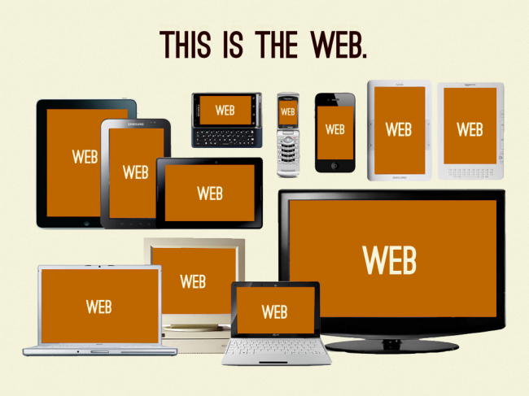
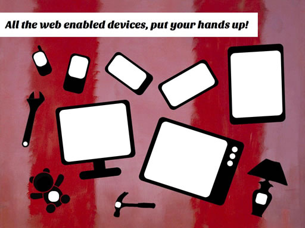

Responsive Design
Mikro szkolenie
@naugtur
Plan:
- Podstawy, pojęcia, ideologia
- Browsing
- Proces
- Narzędzia
- Praktyka!
- CSS i Media Queries
Responsive Design
One site to rule them all
DCD :)
Czy to Device Centered Design?
Mobile is a user state, not a device.
~ Cennydd Bowles
- Czego chce mobilny użytkownik?
- Mniejsze okno na świat
- Web to nie plakat
- Przeglądarki są wszędzie
Palce i ich konsekwencje
- co robi mysz
- Hover
- Daje się wykryć podczas przemieszczania
- Przyciski, scroll
- co robią palce
- Tap, brak informacji o ruchu palca gdy nie dotyka ekranu
[nie wiadomo kiedy użytkownik się zastanawia czy coś kliknąć]
- Palce nie są przezroczyste
- Swipe
- Pinch (in & out)
- 3 palce też mają co robić
Skoro web to nie plakat, to co?

Skoro web to nie plakat, to co?
Skoro web to nie plakat, to co?

Experience
.
Interaction
.
Response
Elastyczny layout i dostosowany content
One site to rule them all
---
Mobile First
Responsive Design -proces tradycyjny
- Content
- Content inventory - responsywność zaczyna się od architektury informacji
- Zacznij z "czystą kartką", dodawaj według potrzeb użytkownika.
Mobilny użytkownik nie ma miejsca na dystraktory.
- Design
- Układ, grafika, inerakcja - w każdym kroku
- Najpierw (Mobile First) na najmniejszy ekran
- Breakpointy
- Device agnostic
- Content decyduje sam
Start with the small screen first, then expand until it looks like shit. TIME FOR A BREAKPOINT!
Responsive Design -proces tradycyjny
- Rezultaty procesu?
- Wireframe dla każdego układu
- Wersja graficzna dla każdego układu
- Sporo rysowania, ale nikt nie zobaczy jak to działa.
Bo web to nie plakat
Designing in the browser
- Design/Prototyp
- Style Guide zamiast fotoszopki. Na początku.
- Jeśli cokolwiek ma prawo ograniczać Twoją kreatywność to tylko przeglądarka
- Przejdź od rysunków prosto do prototypu
- Design wizualny można zrobić od razu na prototypie
- Iteracje z IT
3G, a i tak wolno
- Projektowanie pod szybkość łącza
- Ukryty content też się ściąga
- Dylemat z obrazkami (rozwiązany przez Mobile First?)
- Progressive Enhancement może dotyczyć też zawartości
- Szybkość odpowiedzi
Ekran dotykowy nie robi click , skąd mam wiedzieć czy to kliknąłem?
I jeszcze jedna linijka
<meta name="viewport" content="width=device-width, initial-scale=1.0">
Ważne, bez tego telefon udaje, że ma większy ekran ;)